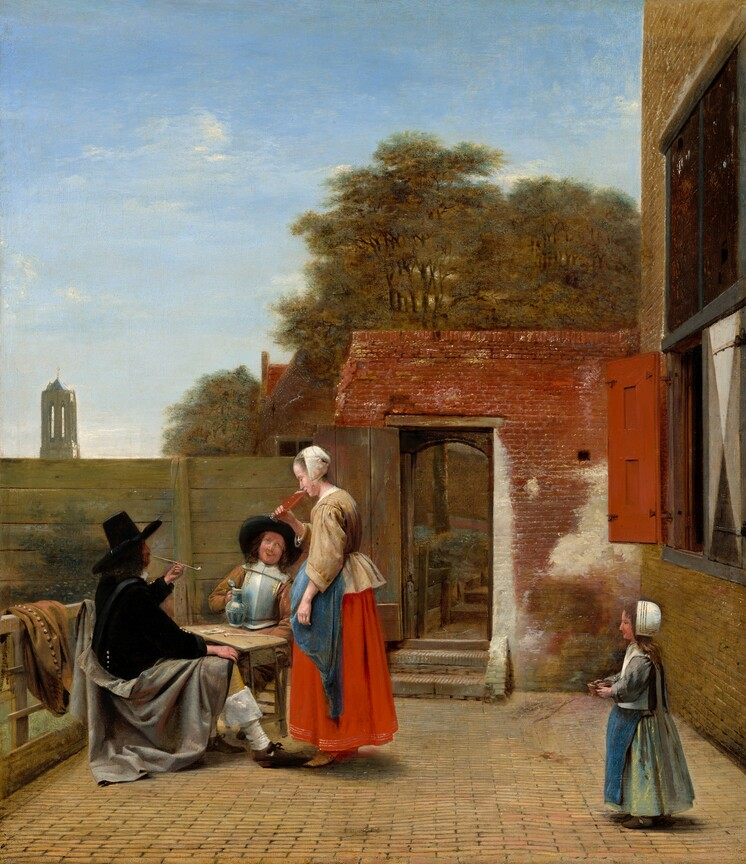
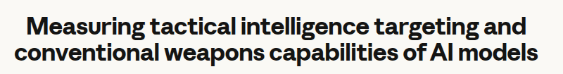

Bellingcat · June 2025
25 unpublished photos · 20 models
Lifan
Who painted this, and where is it now?

Bellingcat · June 2025
25 unpublished photos · 20 models
Anthropic · September 2026

Photo geolocation without search tools